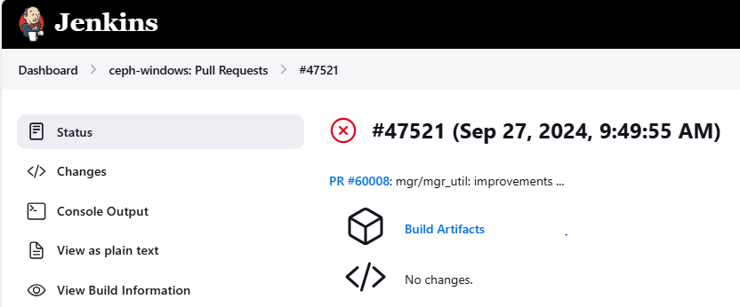
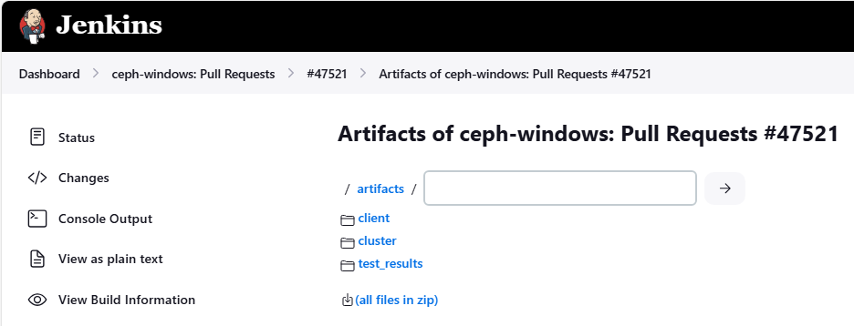
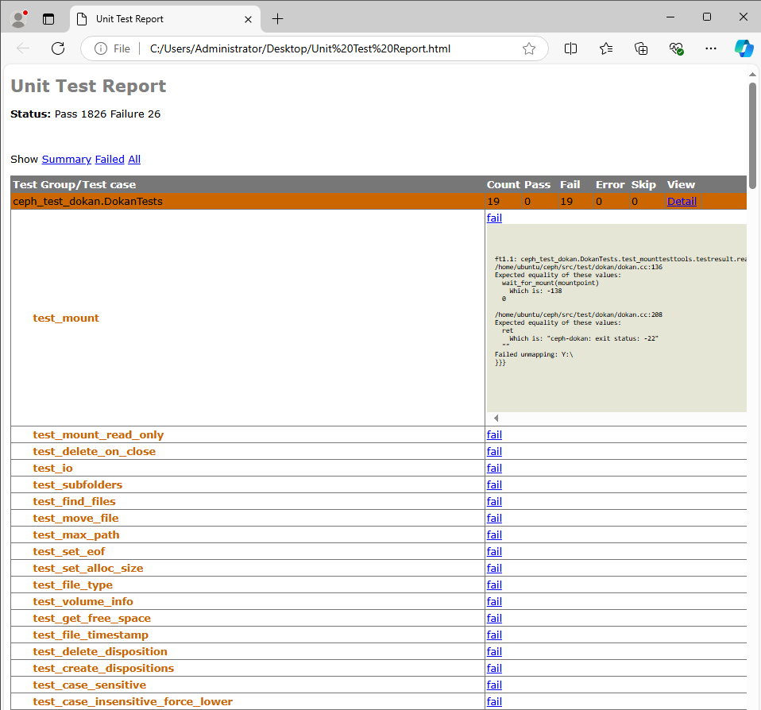

Notice
This document is for a development version of Ceph.
Testing - Windows
Since Pacific, the Ceph client tools and libraries can be natively used on Windows. This allows Windows nodes to consume Ceph without additional layers such as iSCSI gateways or SMB shares.
A significant amount of unit tests and integration tests were ported in order to ensure that these components continue to function properly on Windows.
Windows CI Job
The Windows CI job performs the following steps for each GitHub pull request:
spin up a Linux VM in which to build the server-side (Linux) Ceph binaries and cross-compile the Windows (client) binaries.
recreate the Linux VM and start a Ceph vstart cluster
boot a Windows VM and run the Ceph tests there
A small PowerShell framework parallelizes the tests, aggregates the results and isolates or skips certain tests that are known to be flaky.
The console output can contain compilation errors as well as the name of the tests that failed. To get the console output of the failing tests as well as Ceph and operating system logs, please check the build artifacts from the Jenkins “Status” page.

The Windows CI artifacts can be downloaded as a zip archive or viewed inside the browser. Click the “artifacts” button to see the contents of the artifacts folder.

Artifact contents:
client/- Ceph client-side logs (Windows)eventlog/- Windows system logslogs/- Ceph logs-windows.conf- Ceph configuration file
cluster/- Ceph server-side logs (Linux)ceph_logs/journal
test_results/out/- raw and xml test output grouped by the test executabletest_results.html- aggregated test report (html)test_results.txt- aggregated test report (plaintext)
We’re using the subunit format and associated tools to aggregate the test results, which is especially handy when running a large amount of tests in parallel.
The aggregated test report provides a great overview of the failing tests. Go to the end of the file to see the actual errors:
{0} unittest_mempool.mempool.bufferlist_reassign [0.000000s] ... ok
{0} unittest_mempool.mempool.bufferlist_c_str [0.006000s] ... ok
{0} unittest_mempool.mempool.btree_map_test [0.000000s] ... ok
{0} ceph_test_dokan.DokanTests.test_mount [9.203000s] ... FAILED
Captured details:
~~~~~~~~~~~~~~~~~
b'/home/ubuntu/ceph/src/test/dokan/dokan.cc:136'
b'Expected equality of these values:'
b' wait_for_mount(mountpoint)'
b' Which is: -138'
b' 0'
b''
b'/home/ubuntu/ceph/src/test/dokan/dokan.cc:208'
b'Expected equality of these values:'
b' ret'
b' Which is: "ceph-dokan: exit status: -22"'
b' ""'
b'Failed unmapping: Y:\\'
{0} ceph_test_dokan.DokanTests.test_mount_read_only [9.140000s] ... FAILED
The html report conveniently groups the test results by test suite (test binary). For security reasons it isn’t rendered by default but it can be downloaded and viewed locally:

Timeouts and missing test results are often an indication that a process crashed. Note that the ceph status is printed out on the console before and after performing the tests, which can help identify crashed services.
You may also want to check the service logs (both client and server side). Also, be aware that the Windows “application” event log will contain entries in case of crashed Windows processes.
Frequently asked questions
Why is the Windows CI job the only one that fails on my PR?
Ceph integration tests are normally performed through Teuthology on the Ceph Lab infrastructure. These tests are triggered on-demand by the Ceph QA team and do not run automatically for every submitted pull request.
Since the Windows CI job focuses only on the client-side Ceph components, it can run various integration tests in a timely manner for every pull request on GitHub. In other words, it runs various librados, librbd and libcephfs tests that other checks such as “make check” do not.
For this reason, the Windows CI often catches regressions that are missed by the other checks and would otherwise only come up through Teuthology. More often than not, these regressions are not platform-specific and affect Linux as well.
In case of Windows CI failures, we strongly suggest checking the test results as described above.
Be aware that the Windows build script may use different compilation flags
and -D options passed to CMake. For example, it defaults to Release mode
instead of Debug mode. At the same time, it uses a different toolchain
(mingw-llvm) and a separate set of dependencies, make sure to bump the
versions if needed.
Why is the Windows CI job mandatory?
The test job was initially optional, as a result regressions were introduced very often.
After a time, Windows support became mature enough to make this CI job mandatory. This significantly reduces the amount of work required to address regressions and assures Ceph users of continued Windows support.
As said before, another great advantage is that it runs integration tests that quickly catch regressions which often affect Linux builds as well. This spares developers from having to wait for the full Teuthology results.
Brought to you by the Ceph Foundation
The Ceph Documentation is a community resource funded and hosted by the non-profit Ceph Foundation. If you would like to support this and our other efforts, please consider joining now.